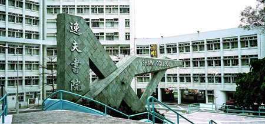

SYSU-CUHK 2+2
中山大学-香港中文大学 2+2
Life in CUHK
本部分将按照书院分类进行介绍，因为编辑人手限制，暂时先介绍四大书院（崇基，联合，新亚，逸夫），新书院后续进行补充。着重介绍书院生活以及吃货最关注的膳食质量(部分摘自MUA新生手册以及学校官方网站)。
对许多中大毕业生来说，在书院结识的友伴，书院宿舍内的某次促膝长谈或炽热讨论，都是日后回忆的重要片段。书院是紧密的小群体，师生密切交流，朋辈一同成长。所有中大全日制本科生都可选择一所书院，成为该院的一分子。每所书院都是独树一帜的，有各自的文化，但汇聚在一起，却塑造了中文大学的精神面貌。
书院是和谐融洽的群体，各有宿舍、饭堂及其他设施。书院着重全人发展，举办各种活动，让学生为自己的大学生活添上色彩。这些活动包括海外交流及外访计划，研讨会，师友计划，社区服务，语文、资讯科技和领袖才能训练，还有多种学生社团组织的课外活动。
书院提供众多非形式教育机会，与正规课程相辅相成，旨在培养学生的人际关系技巧、文化品味、自信心和责任感。学生更可善用奖学金和经济援助计划充分发挥个人成长的潜力。许多中大毕业生都说，书院生活是他们在学期间最难忘的回忆。
崇基学院于1951年由香港基督教教会代表创办，为本地首所基督教中文专上学院，以切合当年社会对高等教育的需求。学院与欧洲和美国的著名教育团体联系紧密。崇基学院提倡文理兼备的教育，并举办极受欢迎的游学团及海外学习计划。

膳堂评价
中大负有盛名的饭堂，饭菜种类较齐全，相信能满足你挑剔的口味，价钱方面也很公道。酸辣肥牛米线和各类炒饭都很受欢迎。众志堂还是各大书院饭堂中唯一一个提供夜宵（21:00--次日 2:00，周五周六除外）的饭堂。
位于众志堂和崇基图书馆的中间的庞万伦活动中心2楼，价格适中，担担面，部分小菜，焗饭值得一试。
位于教职员餐厅脚下，康乐室对面，这里的饭菜可谓精致可口。掩映在绿树间的进餐环境富有情调，适合情侣前往，价格相对众志堂就稍高一些。
位于李慧珍楼三楼，喜欢西餐的同学不妨一试。据说这里也是适合午后看书的场所 。
同样位于李慧珍三楼，是一家新开的餐厅。它提供地道的中东伊斯兰风味食物，比如各色卡巴、沙拉、大薄饼等，虽然价格稍高，但是料很足。值得一提的是，在这里点餐都要用英文，因为工作人员都是外国人哦。
位于康本国际学术园一楼，旁边便是大学书店，设有舒适座位。主要提供咖啡、蛋糕、意粉、沙拉等西式餐点。这里的食物比起饭堂稍贵，不过由于地理位置优越，同学们下课后不妨去喝一杯浓香的咖啡、吃一块芝士蛋糕来放松一下。在赶堂之余，可以方便地解决午餐。
位于大学站，是香港主要的连锁店式餐厅之一。这里的食物虽然价格较校内饭堂稍稍高，但物有所值。在崇基上完课到美心用餐也不失为一个好的选择，离商科大本营郑裕彤楼较近。
特色活动
崇基有相当丰富的文化活动，包括“一人一艺”计划（资助学生学习艺术课程如乐器、舞蹈、工艺等）、电脑软件工作坊、天文观星工作坊、学长计划 (包括海外学长和本地学长计划）、崇基歌唱比赛、暑期义工团（前往内地韩国印度和东南亚等国家和地区）、吐露夜话（与名人面对面的交流）、提高语文能力计划（粤语学习小组、英语桌、语文桌和演讲会等，参加提高语文计划的次数越多，出国计划的资助越高，同学们要积极参加呀）、学生访问计划（前往内地著名大学交流）、海外语言学习和交流计划（到德国学德语和到法国学法语，当然少不了在当地旅游啦）、外展训练计划（学习野外生存技巧）等。
值得一提的是崇基丰富的暑期出国计划。暑课期间，崇基会资助同学前往美、英、加、澳的世界顶级院校（如哈佛、耶鲁、牛津、剑桥、伯克利等）修读暑期课程，除了体验西方生活和文化之外，同学还可以申请将修读的学分转到中大。
联合书院于1956年由广侨、光夏、华侨、文化及平正五所专上学院合并组成，五院原为广州及其邻近地区的私立大学，与香港关系密切。书院设有各种计划，以培养创新及企业精神，并推动德育、环境保护及身心健康等特色活动。书院学生可参加交换计划往世界各地专上学府体验生活。

膳堂评价
早餐还不错，正餐一般，特色意粉日日不同，可以尝试。餐厅外面已有桌椅可供用餐，环境不错。餐厅一角另有一个咖啡吧，在此饮杯咖啡，吃块甜品也是不错的选择。
位于学生膳堂旁边，价格较学生膳堂略贵，但食物质素较好，味道好很多，推荐尝试。
位于郑栋材楼地库，是中大唯一一间拥有酒吧、大型投影幕、桌球等设施的师生文娱中心，是小型聚会的好去处。书院的普通话桌、英语桌等在此举行。
特色活动
书院每年都有院长杯、陆运会、水运会、联宿对抗赛等体育活动，多以宿舍为单位。体育才能突出者还可参选院队，代表书院参加比赛。
有葵青青年狮子会、环保协会、扶轮青年服务团、领袖训练学会等。各社团活动丰富。
高桌晚宴、歌唱比赛、院庆千人宴、大笪地等。
由书院赞助，通过轻松的聚餐和嘉宾短讲，加强师生沟通，每年都有几次，需提前报名，有为非本地生办的晚宴，值得参加。
由书院导师和住校导师合作，设立生态游、社会服务、游历香港等专题研习小组，带领学生进行校外考察、讨论交流等。
学长计划邀请毕业八年或以上的联合书院校友担任学长，带领一两名学生互相分享在学业和人生旅途上的体验。配对组合时间为一年，鼓励大家参加此活动并积极与自己的学长联系交流，他们可以提供很多好的经验和建议。
为了鼓励学生到外地交流学习，联合书院于2008年成立了迈进地球村系列，以配合全球化及多元文化校园的趋势。学生可获奖学金资助，参加由书院组织或书院与其他学系合办的非本地学习活动。这些活动包括海外交换或交流计划、专题考察计划、语言及文化学习团等。书院期望同学透过参加长期或短期的交流活动，能与内地及世界各地的年轻人一起学习和成长。
书院定期举办免费英语桌、粤语桌等，令同学在轻松愉悦的环境中用该种语言进行交流，并结识更多朋友。
不计算学分的通识教育活动，学生须于每一在学学期出席不少于三次。书院聚会于每学期初在网上注册，每个聚会名额有限，额满即止。聚会的目的在加深同学们对文化、科学、艺术、大学生活及社会问题之认识，并加强同学和书院的联系。在大学邵逸夫堂举行的大型聚会每学年一般举行六至十次，书院亦会在大学及书院校园内安排多次较小型聚会，供同学选择。
新亚书院于1949年由以钱穆博士为首来自国内的一群学者兴办，创校宗旨在承续中国传统文化，并使其与现代学术结合，令学生不忘本之余，且有能力应付现代社会的挑战。书院与耶鲁大学关系密切，亦与中国、台湾、日本和新加坡多所大学和企业合作开办各类交换、研究及实习计划。
膳堂评价
新亚食堂可是相当不错的，不少学生“不远万里”都要上山点上一杯新亚的红豆冰，品尝新亚食堂的美味。新亚食堂菜式很多很多，早午晚都很多选择，可满足不同口味的学生需求。下午茶套餐亦非常丰盛，性价比高。重点推荐有烧味，车仔面，小菜套餐，还有下午茶的小食。新亚食堂的价格合理，面积大，座位多（尽管如此，中午可能还是找不到位子，因为好吃！）。
特色活动
“千人宴”供同学报名购票参加，很多人聚在一起吃饭聊天，观看表演，十分热闹；摆摊位卖自己制作的东西，既可以成为参与者也可以成为购买者；“联宿鬼屋”由书院各宿舍共同举办，吸引许多同学排队“探险”；“新亚夜”活动丰富，在圆形广场有互动演出
新亚的对外交流多姿多彩，每年有和耶鲁大学合作举行的两个交流计划，暑期有去日本和英国的语文研习计划，还有去牛津大学交流学习的暑期计划，更有与日本、韩国、美国等高校的交换计划。
在学期初，同学们会选择参加的双周会和座谈会。双周会会邀请学者来演讲，增长我们的知识；座谈会以聚餐形式进行，在吃好喝好的同时也能受益匪浅。
逸夫书院于1986年由私人捐款成立，以辅导学子培养品德和追求学问为宗旨。文康设施装修在2009年完成后，书院有一个新的室内运动场，有助提升书院精神和凝聚力。书院又装修了学生宿舍，促进舍堂生活。书院并举行高桌晚宴和提供服务社区机会，扩阔学生眼界。
膳堂评价
位于国楙楼G层，可供约二百五十人同时就餐，餐厅非常的清净，买饭基本不用排队。餐厅提供汤面、扒饭等主食，还有各种新鲜面包，下午茶时间还会有中大闻名的大热狗—“热狗皇”。
位于逸夫学生餐厅下一层，每隔一段时间会推出新品套餐，价格会偏贵一些，对饮食要求较高的同学可以一试。
特色活动
逸夫书院有标志性四大活动，第一就是入学前的迎新营（大O），接下来是第一学期九月初会有逸夫里（Shawlane）。逸夫里的活动除大笪地摊位、街头表演、游戏摊位外，每年均邀请歌手及其他有兴趣演出的团体于大型晚会中表演，是一个供全中大学生参与的大型活动。当晚整条环回校巴道被各式摊位占满，表演也非常热闹，鬼屋更声名远播，内地生进去之后，扮鬼的香港同学还会特意说普通话，相当敬业。第三个就是第二学期一月份的院庆，最后是逸夫书院歌唱比赛。这些活动中都会有大家喜欢的歌手出席，比如去年逸夫书院院庆就邀请了薛凯琪参加，大家千万不要错过来年举行的这些活动。另外，逸夫四大活动筹备都以短庄形式进行，同学们也别错过这个锻炼能力的好机会，大家可以参加倾庄以参与到这些活动的筹办当中，可以更好地融入本地生、融入中大、融入香港。另外还有邵逸夫爵士杰出访问学人计划、学生交换计划（今年暑假也增加了不少去国外的学习计划）、语文进修计划、师友计划等将期待你的参与。
同学可通过书院的怀仁社区服务项目计划自行组团申请书院基金开展义工活动。
逸夫书院自 2011 年起每年与马来西亚国立大学合办“世界青年领袖论坛”，邀请数十位海外及本地的杰出青年领袖到逸夫书院，就指定题目发表意见、进行讨论，让他们可就国际及地区议题交流意见，亦能体验其他文化、建立友谊。
网球基础、攀登训练、保龄球、社交舞、爵士舞、瑜伽、健身工作坊、初级箭艺、野战训练等。这些可以说是书院给同学的福利，只需缴付少量的按金就可以丰富课余生活，磨练技艺，而且达到出席课时的要求后还可以退换按金。
影片剪切、电脑保安、资讯能力测试培训。
国内如云南昆明服务学习团，东江探源环保义工行动，台湾绿色之旅；国外如尼泊尔禅修之旅，新加坡企业文化考察团，日本大阪暑期日语研修课程，加拿大英语学习团，德语及文化学习团等。